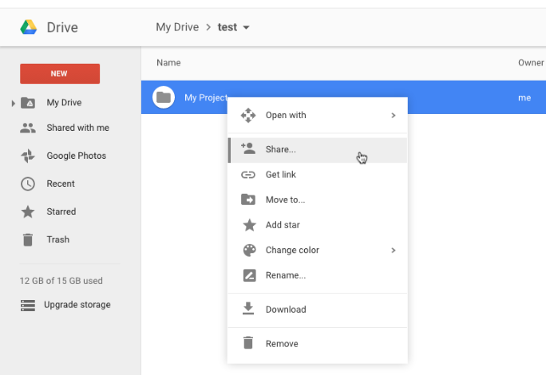
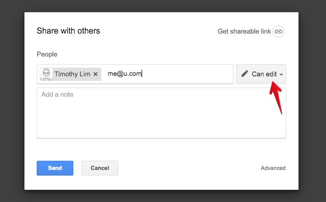
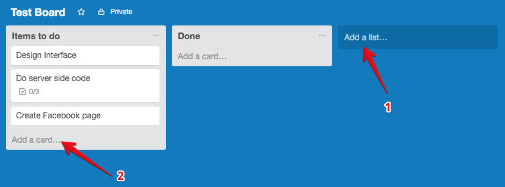
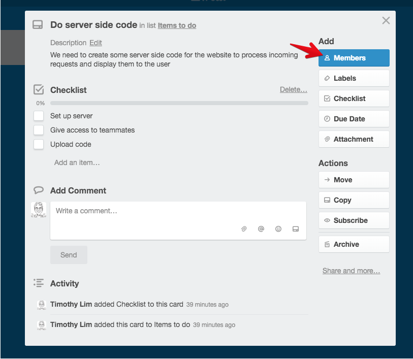
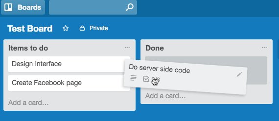
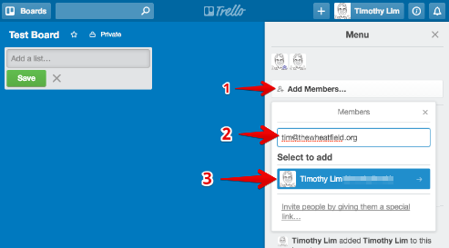
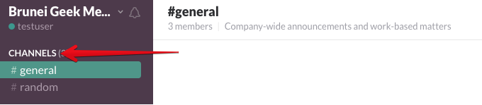
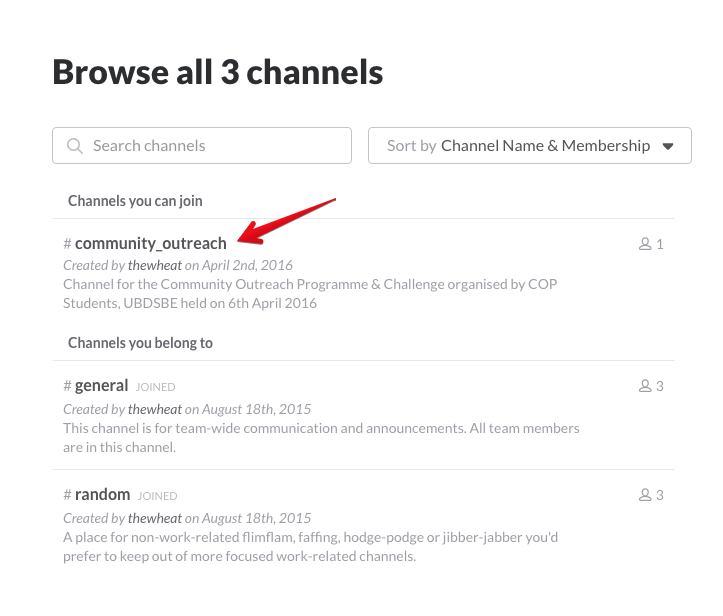
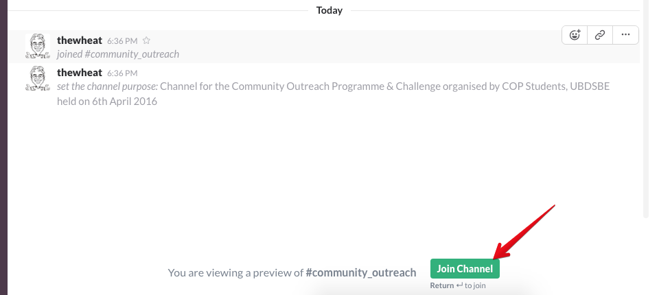

Welcome to the UBD Community Outreach Event page
This page will help you in making today a success 😄
If you have any questions, in the bottom right of this page, you should see a little chat icon where you can ask us any question. If you do not see it, it is likely that you have some Javascript blockers enabled so we would advise you to whitelist Intercom to allow the chat to load.
Organisation
Communication:
- Slack https://slack.com/
- Each project will have their own #channel where you can communicate with your teammates
- A #general channel can be used to talk to everybody
- To sign up, go to http://slack.bruneigeekmeet.com/ and enter your email in (Note: this email will be shown to everybody in the Slack group so use an email you are comfortable giving out to the public)
Documents:
- Google Drive https://drive.google.com
- For creating collaborative documents and storing and sharing files for the project
Tasks:
Storing Code
- Github https://github.com
- @thewheat will update the code here. Please provide the code via Google Drive
- If you know how to use Github message @thewheat for access to the repository
- Alternatively, create a repository of your own and send the link over to @thewheat
- Code provided in repository will be curated and shared for all to use after the event
Got a Question?
- Send a message / direct message to @thewheat on Slack or
Google Drive
Adding a teammate to have access to a folder
- Right click the folder
- Click Share

- Add the person’s email and ensure that the can edit the folder

- Remember to add tim@thewheatfield.org to your folder
Trello
- Add a List to store specific types of tasks to do (simples ones would be "To do" and "Done". You can have other lists like "Things to do for the future" or Lists to indicate future tasks to get done)
- Add a card as a task to be done

- Click on an individual card to show / add more details (Add Members to a card to assign them a task to do)

- When a task is completed drag it over to a "Done" list

Adding a teammate to your board
- You can add them via their email (name@domain.com) or username

- Remember to add tim@thewheatfield.org / thewheat to your board
Slack
- Chat throughout the day in #general / #community_outreach
- Each project will have their own specific channel
- Browser all channels by clicking the "Channels" link in the sidebar

- Join a channel by clicking into a channel

- Then clicking the "Join Channel" button (or pressing return/enter)

Github
- Each project will have their own repository / repos
- These repos will only be updateable by @thewheat
- If you know how to use Github, please message @thewheat to allow you access to the repo
- Otherwise, please send your code over via Google Drive before the day is done